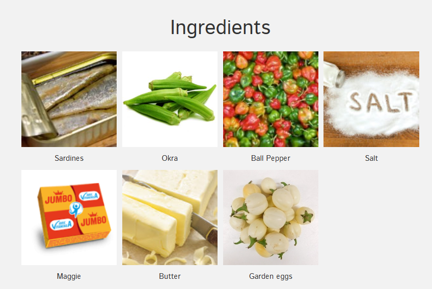

Lafidi is a traditional Sierra Leonean dish made with steamed rice,
boiled and pounded garden eggs, pepper, and okra, seasoned with Maggi and
enriched with butter. It’s served with fried fish, shrimps, and sometimes sausage,
and can be enjoyed with palm oil or groundnut oil.
This flavorful and wholesome meal is a true comfort food.
Recipe Information
Preparation time: 30 minutes
Cooking time: 40 minutes
Servings: 4 people
Difficulty level: Intermediate
Ingredients
2 cups white rice (Jasmine or Pusawa)
6–8 fresh shrimps, cleaned
2 medium fish fillets, seasoned
3–4 garden eggs (light yellow variety)
2–3 fresh peppers (to taste)
1 cup okra
2 tablespoons butter
1 sausage, sliced (optional)
2–3 cubes Maggi (Ami & Onga)
2 tablespoons palm oil or vegetable oil
Salt, to taste
Benni (sesame seeds), toasted

Instructions
Remove the top layer of the garden eggs and pepper that looks like stick. Do the same for the okra using a knife.
Wash the pepper, garden eggs, and okra together, then put them in a pot with water. Boil for 4 minutes.
After boiling, squeeze the water out of them and pound separately. While pounding, add Maggi cubes for taste.
Rinse the pot, add fresh water, and bring it to a boil. Wash the rice and add it to the boiling water. Add a little salt and allow it to cook.
Check after 2 minutes to see if the water is enough. If not, add hot water as needed. Allow the rice to steam until fully cooked and no water remains.
Stir in butter into the rice for a rich taste.
Season fish with salt and spices, then fry until golden brown. Fry shrimps until pink and slightly crisp. Optionally, fry sausage slices.
Dish the cooked rice onto a plate. Add pounded garden eggs, pepper, and okra on the side. Serve with fried fish, shrimps, and sausage.
Sprinkle with benni (sesame seeds). Your Lafidi is now ready to eat!
Tips
For a richer taste, use butter while the rice is still hot so it melts evenly.
If you want extra heat, add more pepper when pounding.
You can also drizzle palm oil for an authentic Sierra Leonean flavor.